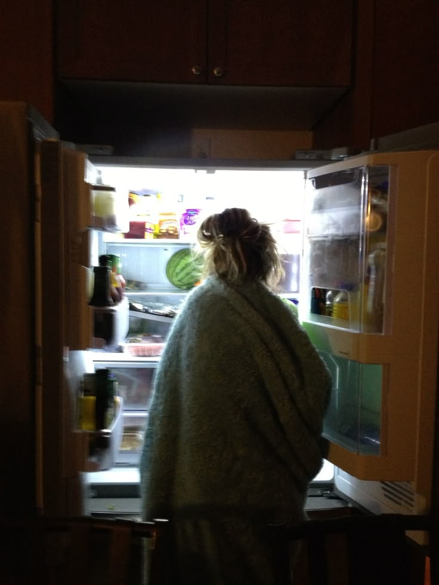

Prečo ste si nás otvorili ?
Vytvorený sme pre každý jeden moment, kedy sa s prázdnym pohľadom pozeráte do chladničky, a jediné, čo vás napadne, je: „Veď v nej nič nieje!“. Chceme vám ukázať, že aj z tých posledných zabudnutých surovín sa dá vykúzliť niečo chutné a nové. Našim cieľom je premeniť frustráciu na inšpiráciu, ušetriť vaše peniaze, znížiť plytvanie a dokázať, že varenie zo zvyškov môže byť prekvapivo kreatívne.
